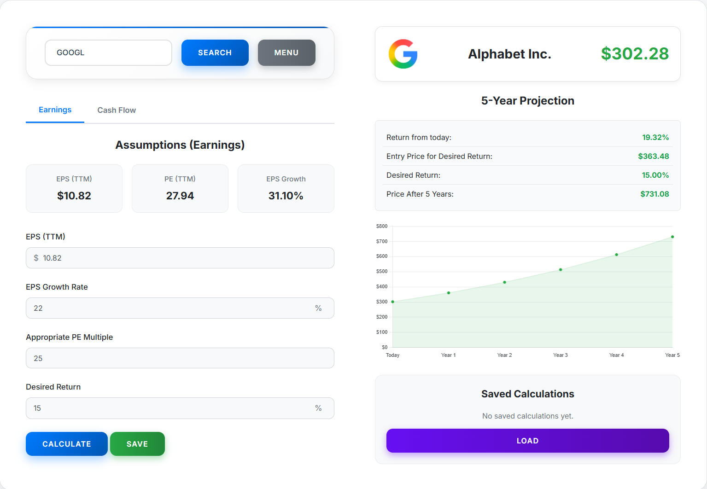
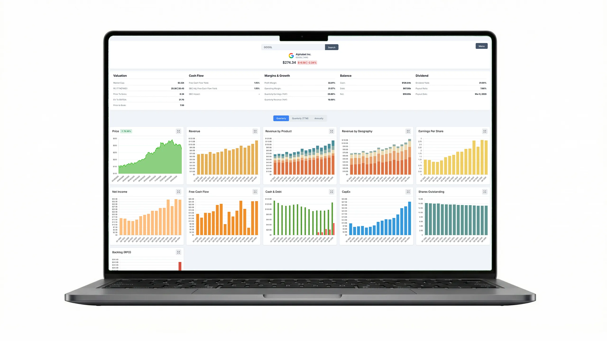
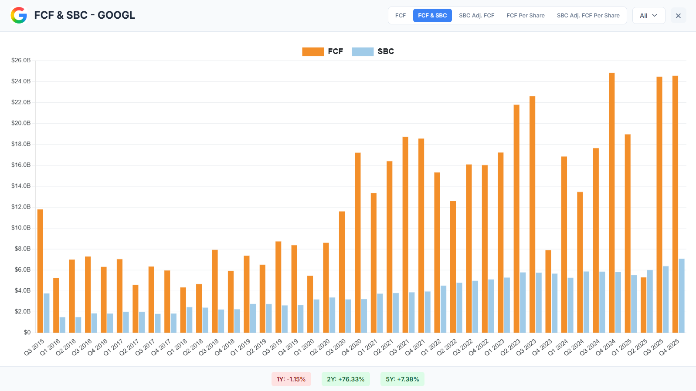
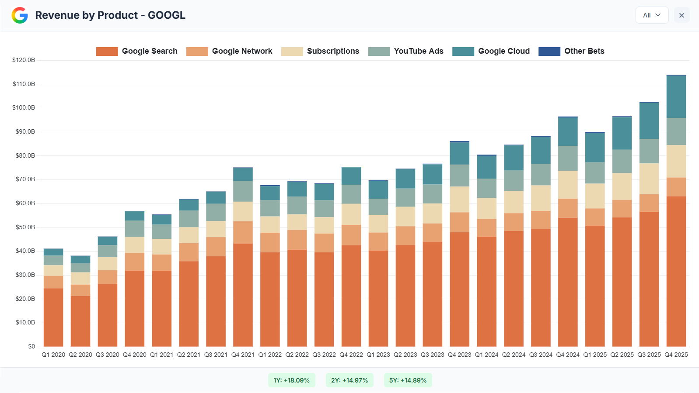
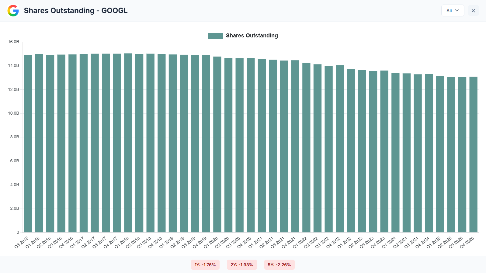

Dual-Lens Valuation
Switch between earnings and cash-flow assumptions to pressure-test upside from multiple angles.
Professional Equity Analysis

What You Get

Switch between earnings and cash-flow assumptions to pressure-test upside from multiple angles.

Track free cash flow and SBC impact together so return assumptions reflect operating reality.

Use geographic and business segment views to separate broad growth from concentrated risk.

Observe share-count behavior over time so per-share outcomes stay anchored to ownership reality.
Workflow
Start with price, historical fundamentals, and trend visibility in one interface.
Define growth, target multiple, and return requirements with transparent inputs.
Review implied entry and future value scenarios, then iterate and store your process.
FAQ
Both. The interface is straightforward for individual investors and structured for disciplined professional review.
Yes. Saved scenarios help you track how your thesis and valuation logic evolve over time.
Yes. You can compare earnings-based and cash-flow-based perspectives depending on the business model.
Create your account and move from opinions to a repeatable process.
Create Account